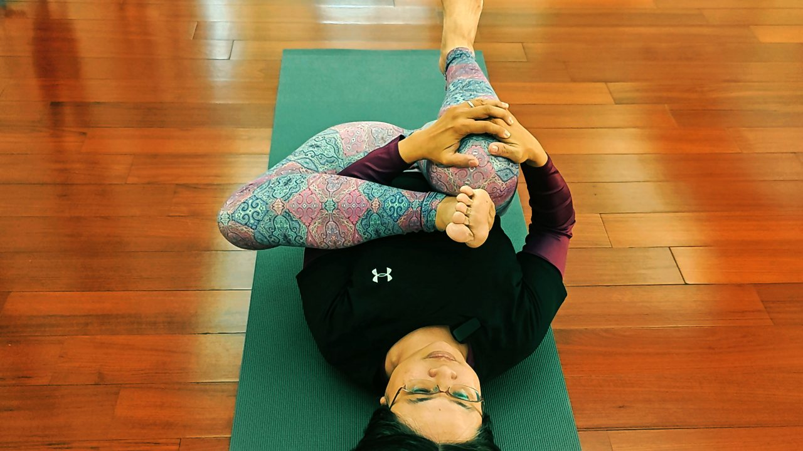

睡前 5 分鐘，讓拱起來的背慢慢躺平

忙了一整天，終於躺上床，你卻覺得背後好像還「拱」著，肩膀浮浮的貼不到床，翻來翻去找不到一個真的放鬆的姿勢。這不是你想太多——是白天那個往前縮的背，還沒下班。睡前花 5 分鐘，用很溫和的方式提醒它躺平，隔天一早也許就不會一睜眼就緊。
為什麼躺下來，背還是硬硬的
坐了一整天、低頭看螢幕，胸口的胸大肌、胸小肌會慢慢縮短，把肩膀往前拉；上背的豎脊肌和胸椎則一直維持在微微駝著的位置，久了就不太願意往回展開。撐了一天的上斜方肌也還沒鬆下來。於是你躺平時，胸口是收著的、上背是拱著的，身體當然覺得「怪怪的、放不下去」。
要讓背躺平，重點不是用力把它壓下去，而是給它一點時間、一個支撐，讓縮著的前面慢慢打開：
- 先開前面：把整天縮著的胸口輕輕展開，肩膀才有空間往後、往下沉。
- 再放後面：讓上背的胸椎一節一節往下貼，不是硬扳，是靠重量和呼吸自己沉。
- 用吐氣帶：每次慢慢吐氣，都是在告訴身體「可以再放鬆一點」。
這是幫助放鬆、好入睡的小儀式，不是拉筋比賽。不追求角度、不追求「拱到最開」，有一點點沉下去的感覺就夠了。
一條毛巾，就能開始的睡前開胸
做法很簡單：拿一條中型毛巾，捲成一個手臂粗的長捲，橫著墊在胸椎下方（大約在兩片肩胛骨中間、內衣帶的高度），然後慢慢仰躺下去。雙手往身體兩側張開、掌心朝上，讓胸口自然被打開；膝蓋可以彎起來踩地，腰比較舒服。接著就只做一件事——深呼吸。吸氣時感覺胸口和肋骨往兩邊擴開，吐氣時想像上背順著毛巾慢慢往下融、往床面沉。配合橫膈膜的深呼吸，緊了一天的上斜方肌也會跟著鬆一點。

毛巾這一招很適合每天睡前做，但它比較像「幫今天收尾」。如果你想讓背真的比較不容易再拱回去，還需要在有支撐的狀態下，慢慢把上背的菱形肌、下斜方肌練回一點力量。這也是壁繩幫得上忙的地方：繩子給你穩定的依靠，讓身體很硬的人也能安全地開胸、練到平常叫不動的上背，不用勉強。想了解可以先看身體很硬、沒基礎，為什麼反而更適合壁繩。
今晚就能做的一個小練習
不想找毛巾也沒關係，先從最簡單的開始：仰躺、膝蓋彎起來踩床，雙手往兩側張開、掌心朝上。吸一口氣，吐氣時輕輕讓肩膀後側往床面沉，停留 5 到 8 個深呼吸，感覺胸口一點一點被打開就好。全程不用出力、不用拉到緊。它不會今晚做一次就讓你的背立刻變平，但只要你把它變成睡前的固定動作，規律地做，身體會慢慢記得「原來放鬆是這種感覺」，一早醒來的緊繃也會少一些。痛就停，換個高度或拿掉毛巾都可以。
本文為體態與姿勢的一般衛教與練習分享，非醫療診斷或治療。若有疼痛、舊傷或特殊病史，請先諮詢合格醫療專業人員。